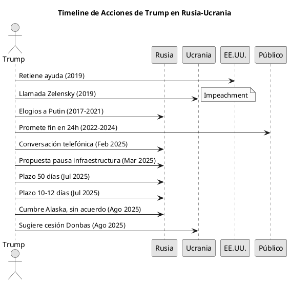
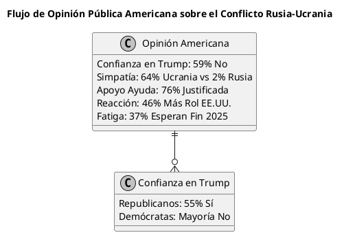

Documento Analítico, Detallado y Crítico sobre las Acciones del "Gran Negociador Mundial" Mr. Trump en el Conflicto Rusia-Ucrania
Documento Analítico, Detallado y Crítico sobre las Acciones del "Gran Negociador Mundial" Mr. Trump en el Conflicto Rusia-Ucrania
Este documento presenta un análisis detallado, crítico y objetivo de las acciones de Donald Trump, autodenominado el "Gran Negociador Mundial", en relación con el conflicto entre Rusia y Ucrania. Se examinan sus intervenciones durante su primera presidencia (2017-2021), sus declaraciones post-presidenciales y de campaña (2021-2024), y sus políticas en su segunda presidencia (desde enero de 2025). El enfoque incluye críticas (como negociar territorios ajenos y prepotencia), aciertos percibidos, la percepción de los estadounidenses, y la capacidad de reacción ciudadana ante el conocimiento del conflicto.
El análisis se basa en fuentes diversas para representar perspectivas equilibradas, incluyendo encuestas de opinión, reportes periodísticos y declaraciones oficiales. Se incorporan tablas para comparaciones, diagramas en PlantUML para visualizaciones, y referencias documentales extensas al final.
El conflicto Rusia-Ucrania, iniciado con la invasión rusa en febrero de 2022, ha evolucionado bajo la administración Trump en 2025 con intentos de negociación, cumbres y amenazas de sanciones, pero sin resolución definitiva hasta la fecha.
Acciones de Trump en el Conflicto acciones trump conflicto
Trump ha intervenido en el conflicto de manera intermitente, con un enfoque en la "negociación rápida" que ha generado controversia.
Durante su Primera Presidencia (2017-2021) primera_presidencia
- Retención de ayuda militar a Ucrania: En 2019, Trump retuvo $391 millones en ayuda aprobada por el Congreso, presuntamente para presionar a Ucrania a investigar a Joe Biden, lo que llevó a su primer impeachment.
- Llamada con Zelensky: La transcripción reveló presiones para investigaciones políticas, criticada como abuso de poder.
- Relaciones con Rusia: Trump minimizó la interferencia rusa en elecciones y elogió a Putin, pero aprobó ventas de armas a Ucrania (e.g., misiles Javelin).
Post-Presidencia y Campaña (2021-2024) post_presidencia
- Declaraciones sobre prevención: Trump afirmó que la invasión no habría ocurrido bajo su mandato, citando su "firmeza" con Putin.
- Promesa de fin rápido: Repetidamente prometió acabar la guerra "en 24 horas" mediante negociaciones directas con Putin y Zelensky.
- Críticas a Biden: Acusó a la administración Biden de escalar el conflicto con ayuda militar excesiva.
Segunda Presidencia (2025-) segunda_presidencia
- Amenazas de sanciones y plazos: En julio de 2025, estableció plazos (50 días, luego 10-12) para que Rusia actúe, amenazando tarifas del 100% si no hay progreso. En agosto, criticó acciones rusas como "desgusting" y prometió "consecuencias severas".
- Cumbre con Putin en Alaska: El 16 de agosto de 2025, se reunió con Putin sin lograr un alto al fuego, pero reclamó "progreso" y sugirió "intercambios de tierra" (e.g., Ucrania cediendo Donbas).
- Propuestas de paz: Incluyen cesión de territorios ucranianos, exclusión de Ucrania de la OTAN y alivio de sanciones a Rusia.
- Conversaciones telefónicas: En febrero y marzo de 2025, discutió con Putin el "reseteo" de relaciones y propuestas como pausas en ataques a infraestructura.
Críticas a las Acciones de Trump criticas prepotencia
Las críticas a Trump son abundantes, centradas en su prepotencia, inconsistencias y alineación percibida con Rusia.
- Inconsistencias y retrocesos: Prometió fin en 24 horas, pero en 2025 ha extendido plazos sin resultados, criticado como "retroceso" y "sumisión a Putin".
- Narrativas falsas: Acusado de fabricar historias sobre la invasión y su prevención.
- Alineación con Rusia: Encuestas muestran que 48% de estadounidenses creen que Trump se inclina hacia Rusia, vs. 10% hacia Ucrania.
- Prepotencia: Su autodenominación como "gran negociador" es vista como arrogante, especialmente al amenazar con sanciones unilaterales sin consulta internacional.
- Impacto en aliados: Críticas de que debilita la OTAN y Europa al sugerir concesiones a Rusia.
Aciertos Percibidos aciertos
Aunque minoritarios, algunos ven positivos en su enfoque.
- Crítica creciente a Putin: En 2025, Trump ha endurecido retórica, llamando acciones rusas "desgusting" y amenazando sanciones, lo que algunos interpretan como evolución.
- Presión para negociaciones: Sus ultimatums podrían haber suavizado demandas rusas, según observadores.
- Aumento en apoyo republicano a Ucrania: En 2025, 51% de republicanos favorecen ayuda militar, un shift de 21 puntos, posiblemente influido por Trump.
- Enfoque en paz: Algunos elogian su énfasis en diplomacia sobre escalada militar.
Negociando lo que No es Suyo y Prepotencia negociacion prepotencia
Trump ha sido acusado de negociar territorios ucranianos como si fueran suyos, exhibiendo prepotencia.
- Cesión de Donbas y Luhansk: Sugirió que Ucrania entregue regiones ocupadas para paz, visto como traición a soberanía ucraniana.
- Exclusión de NATO: Propuso bloquear membresía ucraniana, decisión no suya.
- Arrogancia: Frases como "acabaré la guerra en 24 horas" y plazos arbitrarios reflejan sobreconfianza, criticada como irrealista y egocéntrica.
- Impacto: Esto erosiona confianza en EE.UU. como aliado, beneficiando a Putin.
Cómo es Visto por los Americanos opinion americanos
La percepción pública es mayoritariamente negativa.
- Falta de confianza: 59% no confían en que Trump tome decisiones sabias sobre el conflicto.
- Desaprobación de manejo: Mayoría desaprueba su engagement con Rusia/Ucrania.
- Simpatía por Ucrania: 64% simpatizan más con Ucrania vs. 2% con Rusia.
- Aprobación general: Aumentó tras cumbre con Putin (54% aprobación), pero ligada a otros factores.
- Partidista: Republicanos más positivos (55% confían), demócratas críticos.
Capacidad de Reacción de los Ciudadanos Americanos y Conocimiento del Conflicto reaccion conocimiento
Los estadounidenses muestran alto conocimiento y capacidad de reacción, pero con fatiga.
- Conocimiento: Encuestas indican 76% justifican ayuda militar a Ucrania; 58% quieren que Trump incremente ayuda para detener a Rusia. Simpatía por Ucrania en 59-64%.
- Reacción: Aumento en apoyo a rol mayor de EE.UU. (46% creen que no se hace suficiente). 77% favorecen diplomacia, mostrando disposición a presionar por paz.
- Fatiga: 37% esperan fin en 2025, con preocupación por escalada.
- Capacidad: Opinión pública ha influido en shifts, como aumento republicano en apoyo a Ucrania, demostrando reactividad a eventos.
Tablas tablas datos
Tabla 1: Encuestas de Opinión Pública sobre Trump y el Conflicto
| Fuente | Fecha | % No Confianza en Trump | % Simpatía Ucrania | % Apoyo Ayuda Militar |
|---|---|---|---|---|
| Pew Research | Ago 2025 | 59% | 64% | N/A |
| Newsweek | Ago 2025 | 50%+ | N/A | N/A |
| Brookings | Abr 2025 | N/A | 59% | N/A |
| Gallup | Mar 2025 | N/A | N/A | 46% (más rol EE.UU.) |
| Ipsos (Global) | Abr 2025 | N/A | N/A | 76% justificada |
Tabla 2: Críticas vs. Aciertos
| Aspecto | Críticas | Aciertos Perceived |
|---|---|---|
| Negociación | Retrocesos en promesas, cesión de territorios ajenos | Presión para diplomacia, evolución en crítica a Putin |
| Relación con Rusia | Inclinación pro-Rusia, sumisión en cumbre | Amenazas de sanciones que suavizan demandas rusas |
| Prepotencia | Plazos arbitrarios, arrogancia en promesas | Aumento en apoyo republicano a Ucrania |
Diagramas en PlantUML diagramas visualizacion
Diagrama 1: Timeline de Acciones de Trump (Sequence Diagram)

Diagrama 2: Flujo de Opinión Pública

Referencias Documentales referencias bibliografia
Esta sección lista referencias extensas en formato Org Mode, incluyendo enlaces, fechas y resúmenes breves. Fuentes incluyen búsquedas web equilibradas (pro y contra Trump) y posts de X.
Web y Encuestas
- Pew: Majority lack confidence in Trump on Ukraine (Ago 2025): 59% no confían en decisiones de Trump.
- Newsweek: Over Half Don't Trust Trump (Ago 2025): Similar a Pew, con detalles partidistas.
- Chicago Council: Rise in Republican Support (Ago 2025): 51% republicanos favorecen ayuda.
- Pew: Tariffs Viewed Negatively (Ago 2025): 61% desaprueban tarifas, ligadas a Ucrania.
- Lawfare: First Time Majority Back Long-Term (Ago 2025): 64% simpatía Ucrania.
- Gallup: Ukrainian Support Collapses (Ago 2025): Contexto global, aprobación EE.UU. baja en Ucrania.
- Politico: Disapprove Handling (Mar 2025): Mayoría desaprueba manejo.
- The Conversation: Support for Attitudes (Abr 2025): 26% ven Ucrania como aliada.
- Brookings: Beliefs on Ending War (Abr 2025): 48% ven inclinación pro-Rusia.
- Newsweek: Approval Surges Post-Summit (Ago 2025): 54% aprobación general.
- Gallup: Support Greater Role (Mar 2025): 46% más rol EE.UU.
- NPR: Opinion Shifts (Abr 2025): Mayoría favorece Ucrania.
- NBC: Rooting for Ukraine (Mar 2025): 49% creen Trump pro-Rusia.
- USA Today: Foreign Policy Poll (Abr 2025): No equilibrio en mediación.
- Economist: Approval Tracker (2025): Seguimiento aprobación.
Acciones y Reportes
- CNN: Trump Warns Russia (Ago 2025): Amenazas de consecuencias.
- Al Jazeera: Summit No Deal (Ago 2025): Cumbre Alaska.
- WP: Timeline Quotes (Jul 2025): Shifts en declaraciones.
- Sky News: Zelensky Can End War (Ago 2025): Declaraciones recientes.
- Reuters: New Deadline (Jul 2025): Plazo 10-12 días.
- Al Jazeera: Disgusting Actions (Ago 2025): Crítica a Rusia.
- Guardian: Up to Zelensky (Ago 2025): Post-cumbre.
- AP: Backed Away from Promise (2025): Retroceso en 24 horas.
- BBC: Must Agree Ceasefire (Jul 2025): Plan cesión Donetsk/Luhansk.
- White House: Outcomes Expert Groups (Mar 2025): Imperativo parar matanza.
- Lowy: May Surprise on Ukraine (2025): Soluciones rápidas elusivas.
- Atlantic Council: Evolving Approach (Jun 2025): Evolución gradual.
- WSJ: Russia Doubling Down (Jul 2025): Llamados a paz.
- NPR: Major Statement (Jul 2025): Anuncio sobre Rusia.
- Wikipedia: US and Invasion (2025): Distancia financiera.
- Independent: Timeline Promises (Ago 2025): Tarifas secundarias.
- UK Commons: Shift US Policy (Abr 2025): Reset relaciones.
- ABC: Signaling Change (Jul 2025): Cambio en enfoque.
- Colorado Edu: What's Going On (Feb 2025): Negociaciones rápidas.
- Kremlin: Telephone Conversation (Mar 2025): Propuesta pausa.
Críticas Específicas
- Pew: Lack Confidence (Ago 2025): Repetida para críticas.
- CNN: Fact Check Fake History (Ago 2025): Narrativas falsas.
- BBC: Summit Means (Ago 2025): Enfoque más duro.
- NYT: What to Know Peace Talks (Ago 2025): Cede Donbas.
- Reddit: CMV Approach Correct (Mar 2025): Debate público.
- Atlantic: Turning Point Criticisms (May 2025): Crítica a bombardeos.
- BBC: Handing Donbas (Ago 2025): Intercambios de tierra.
- NYT: Bows to Putin (Ago 2025): No alto al fuego.
- WSJ: Became Putin Critic (Jul 2025): Relación agriándose.
Aciertos y Vistas Positivas
- The Hill: Takeaways Summit (Ago 2025): Intentos de halt guerras.
- CSIS: Experts React (Ago 2025): Suaviza demandas rusas.
- TIME: Putin Wins (Ago 2025): Victorias para Putin, pero contexto.
- Atlantic: Offered Victory (Jul 2025): Control regiones ocupadas.
- Lowy: Surprise (2025): Repetida.
- Pew: Tariffs Negative (Ago 2025): Repetida.
- Al Jazeera: Diplomatic Win (Ago 2025): Para Putin.
- Yahoo: Managing Retreat (Ago 2025): Victoria rusa.
- Pew: View War (Abr 2025): 47% committed peace.
- CNN: Gifts Time (Ago 2025): Tiempo para Rusia.
- Brookings: Changed Standing (Abr 2025): Reenganche Kremlin.
- Carnegie: Killing Kindness (Feb 2025): Explotar deseo Trump.
- Yahoo: Key Success (Ago 2025): Bajas expectativas.
- BBC: Pursues Peace (Ago 2025): Preferencia acuerdo permanente.
- Brookings: Stay Course (2025): 77% diplomacia.
Posts de X (Twitter)
- Trump Post: Syria and Russia in Ukraine (Dic 2024): Menciona pérdidas rusas en Ucrania (600,000 soldados).
- Trump Post: Bitcoin Anniversary (Oct 2024): No directo, pero contexto general.
Conocimiento y Reacción
- Pew: Lack Faith (Ago 2025): Repetida.
- Politico: Lack Faith (Ago 2025): Pérdida terreno republicanos.
- Gallup: Ukrainian Support (Ago 2025): Repetida.
- Brookings: Believe Ending (Abr 2025): Apoyo Ucrania 59%.
- Newsweek: Don't Trust (Ago 2025): Repetida.
- ISW: Offensive Assessment (Ago 2025): Apoyo ruso a guerra.
- CFR: Support Grows (Mar 2025): Cambio en sentimiento.
- IGA: NATO Poll (Jun 2025): Tradeoffs ayuda.
- CBS: In-Depth Poll (Jun 2025): 76% ayuda justificada, 58% más ayuda.
- Ipsos: Global Attitudes (Abr 2025): 37% esperan fin 2025.